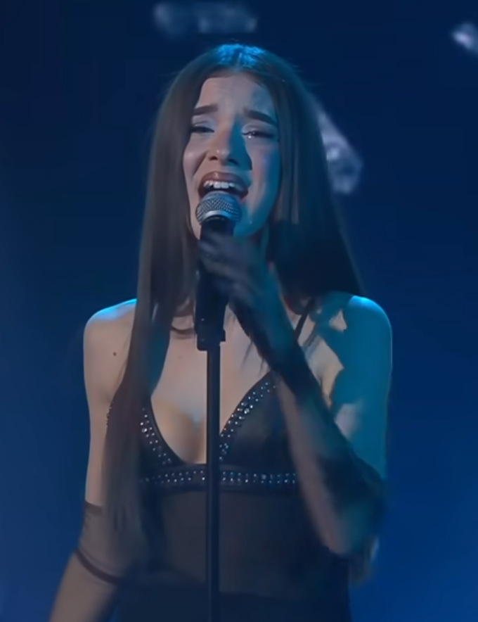

Cristina Lora nació el 2 de septiembre de 2006 en Mairena del Aljarafe, Sevilla. Desde los seis años se formó en danza, claqué y teatro, y aprendió a tocar el piano y la guitarra, construyendo desde pequeña una base artística sólida y versátil.
Su talento la llevó pronto a la televisión: de niña apareció en Menuda Noche (Canal Sur) y a los trece años alcanzó la semifinal de Idol Kids (Telecinco). También participó en Tierra de Talento, consolidándose como una de las voces jóvenes más prometedoras de Andalucía.
En diciembre de 2025 ganó Operación Triunfo 2025, convirtiéndose en la primera triunfita de su generación y alzándose con el primer premio del concurso. Desde entonces ha lanzado varios singles que ya suenan en todas las plataformas digitales, combinando pop contemporáneo con sus raíces flamencas y su energía en el escenario.
Fuera de la música, Cris estudia Periodismo y Comunicación Audiovisual en la Universidad de Sevilla. Una artista completa que acaba de empezar.

Únete a la comunidad de Cris Lora. Sé el primero en enterarte de novedades, conciertos y lanzamientos.
Únete ahora